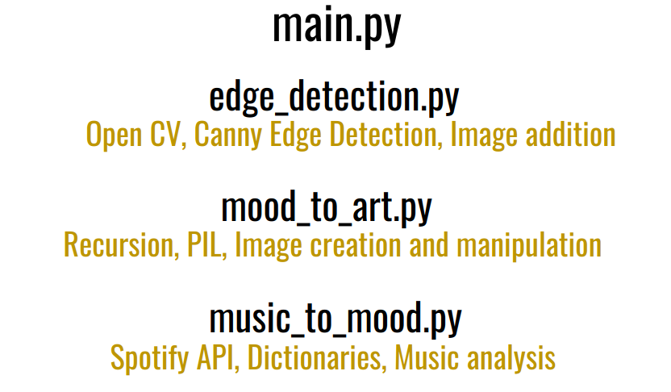
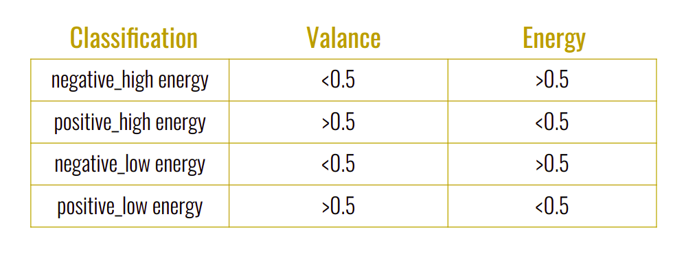

System Diagram
Part 1: Analyzing the song
Spotify API provides an audio analysis feature given the URI of a track. The analysis returns useful information like the duration of the song, the tempo, the energy, the valance, and many other attributes. To generate a mood, we analyzed two attributes: valance and energy. The valance of a song is defined as the musical positiveness. The energy of a song is defined as the measure of intensity and activity. We created categories of "mood" as shown in the image below. A song with low valance and high energy would fit under the negative_high energy mood. To understand how this mood is used to generate art, read the following section.
Part 2: Computing sequential art images
?
Part 3: Compiling with edge detection
Open CV is a Python library used for real-time computer vision applications Here we use it to take in camera frames and manipulate them. Open CV's Canny Edge Detection to detect edges in a raw frame. The edges are then added to the correct art image. Simple image addition works here because the edges are white lines with a pixel value of 255 and everything else is black with a pixel value of 0. Thus, when pixels from the art are added the black disappears and the white remains white. For the duration of the song, the art background changes with time to make the background flow smoothly like a video.